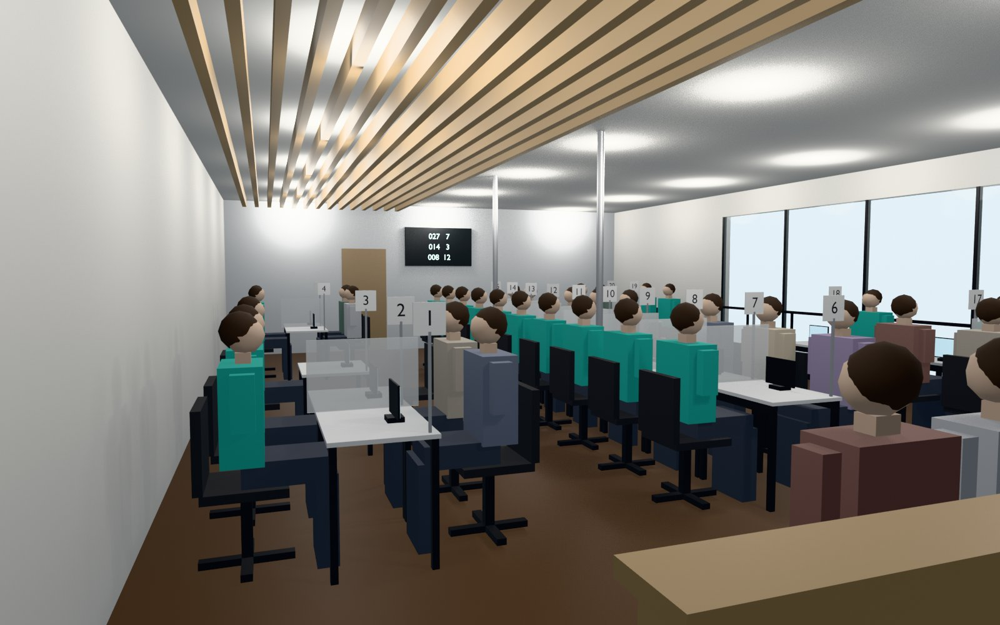
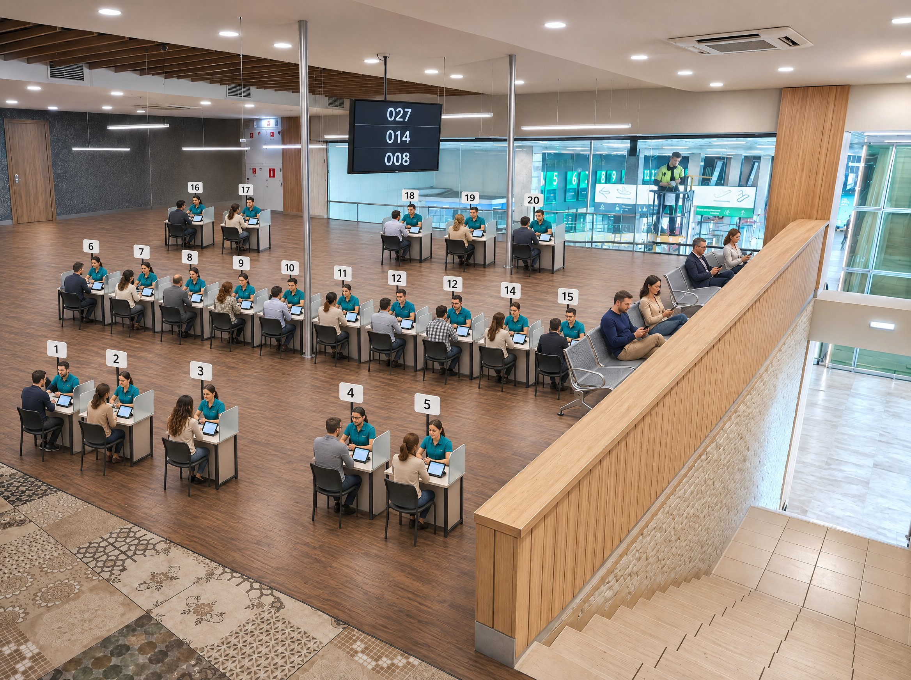

Предварительный расчёт · 26 ноября 2026
Посчитано по расстановке «вариант C» (20 рабочих мест, в помещении не больше 50 человек), фотографиям антресоли и стойки, вашим решениям ноября и вашей модели от 20.11.2026. Цены — ориентир для бюджета: сняты из поисковой выдачи магазинов 26.11.2026, перед закупкой их нужно сверить.


В расстановке 20 одинаковых столов, но техника на них разная. Ниже моё предложение, как их разделить. Цифры можно поменять в следующем разделе — схема перекрасится.
Три готовых набора и ручная настройка. Поменяйте — схема, таблицы и итог пересчитаются.
Галочка слева — учитывать строку в итоге. Строки «по желанию» выключены, включите нужные. Пометка «зависит от аэропорта» стоит там, где сначала надо узнать, кто делает работу и платит за неё, или получить разрешение на место.
Для сравнения: в вашей финмодели от 12.11.2026 на 12 мест заложено 6,4 млн ₽ без экранов за рубежом — мебель 1,08, оборудование 2,53, экраны 1,42, работы 1,42 млн. Там есть сканеры паспортов по 60 тыс. на место, покупная очередь, LED-табло и планшеты по 35 тыс. Здесь их нет, зато есть компьютеры, кассы и принтеры на окнах, свет и сеть. Планшет Galaxy Tab Active5 у поставщиков со счётом стоит 72–75 тыс.: на 20 планшетах это на 0,75 млн ₽ больше, чем в модели.
Сроки взяты из вашей модели от 20.11: декабрь — подготовка и закупка на открытие, январь — работа на 6 столах и докупка до 12, февраль — 12 столов. Расходники покупаются на месяц вперёд. Аренду и вариант оплаты управления можно поменять здесь же. Процент от прибыли, ИТ, коммунальные, привлечение клиентов и доработка программы сюда не входят.
Число ставок и цена ставки взяты из вашей модели от 20.11, базовый сценарий: в январе 8 531 клиент, в феврале 27 978. Ставка 202 тыс. ₽ — это полная стоимость человека в месяц с налогами, развозкой и связью, а не сумма на руки. Одна ставка — один человек на 180 часов в месяц.
Предложение: оклад получает должность, а не собственник. Кто не работает в компании каждый день, оклада не получает. Процент от прибыли начисляется только в прибыльный месяц; собственникам он выплачивается после того, как инвестору вернулись вложения.
Закупки — не самое долгое. Дольше всего идут согласования и то, что от них зависит. Сроки — моя оценка по обычной практике, а не регламент аэропорта: точные назовёт он сам.
| Что | Сколько | Что без этого не начнётся | Когда начинать |
|---|---|---|---|
| Договор на помещение второго этажаПо вашим октябрьским документам он ещё не был оформлен. | 3–8 недель | Работы в зале, завоз мебели, пропуска | Сейчас |
| Утверждение расстановки пожарной службой аэропортаНа чертеже написано: до утверждения — обмер, пожарные краны, двери, высота потолка. | 2–4 недели после обмера | Заказ мебели: от расстановки зависят размер и число столов | Сейчас |
| Проект, согласование и работы в залеСвет, электрика, сеть, перегородка, пожарная сигнализация. Подрядчик нужен с допуском аэропорта. | 6–10 недель | Открытие зала | Сразу после договора |
| Допуск в зал выдачи багажаПисьменный допуск, пропуска, планшет и принтер в перечне технических средств. | 1–2 месяца | Работа агентов у ленты | Сейчас. До допуска встречать на выходе из таможенного коридора |
| Новое юрлицо, счёт в банке, касса и приём картВ вашей модели регистрация — в декабре. | 3–5 недель | Оплата у окна | Декабрь |
| Договоры с банком, операторами связи, страховой, нотариусомБез договора с оператором связи на эту точку SIM оформлять нельзя — docs/00, раздел 9. | 3–6 недель | Карты, SIM, полисы | Вместе с юрлицом |
| Техника из КитаяПроба 2–3 недели, партия ещё 3–5. Около 6 февраля в Китае Новый год — отгрузки встают на две-три недели [проверить дату]. | 6–9 недель | Рабочие места на окнах | Проба — сейчас |
| Набор, обучение и пропуска людейОбучение новых — две недели по вашей модели; пропуск аэропорта оформляется на каждого. | 3–5 недель | Выход смен | За месяц до открытия |
| Вывески и навигацияСогласование макетов с аэропортом, потом изготовление и монтаж. | 4–7 недель | Клиент не найдёт лестницу | После сверки слов с юристом |
| Заключения юристов по персональным даннымВ правилах проекта: с настоящими паспортами не работаем, пока заключений нет. | 2–6 недель | Работа с настоящими клиентами | Сейчас |
В итог на запуск не входит. Порядок цифр, чтобы понимать текущие расходы на технику.